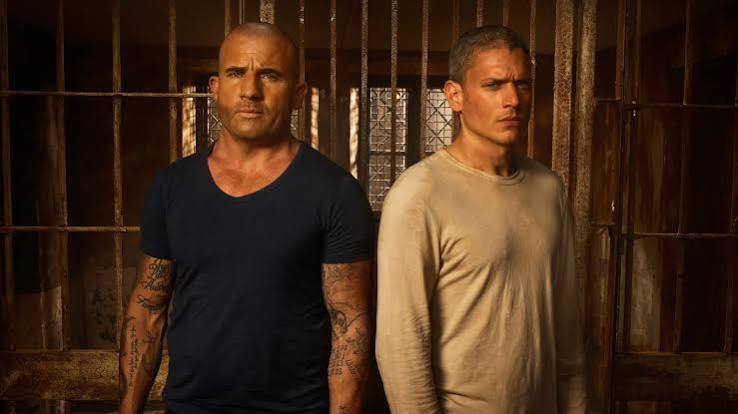
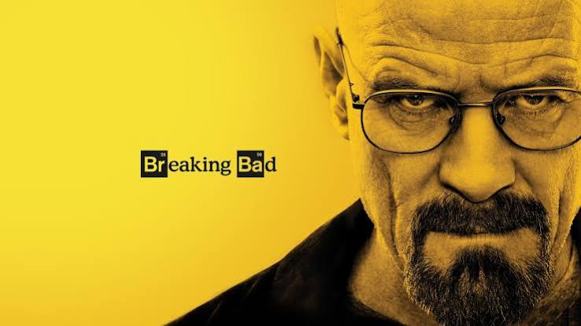
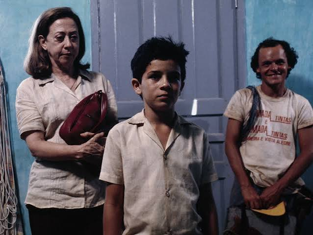
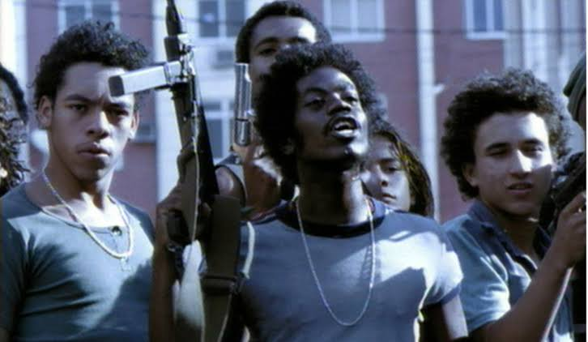
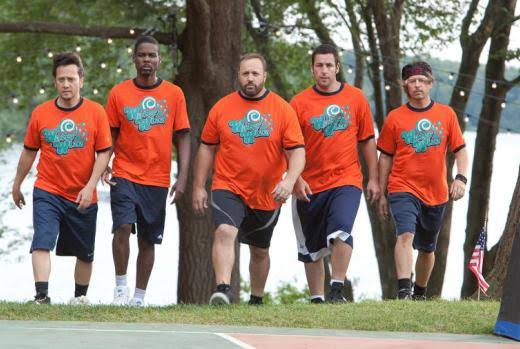

Prison Break

Um homem elaborado entra deliberadamente na prisão para ajudar seu irmão sumariamente condenado à morte a escapar
Stranger Things

Quando um garoto desaparece, uma pequena cidade descobre um mistério envolvendo experimentos secretos e forças sobrenaturais.
Breaking Bad

Um professor de química do ensino médio diagnosticado com câncer inoperável se transforma em um produtor de metanfetamina
Central do Brasil

Uma ex-professora escreve cartas para analfabetos e decide ajudar um menino a encontrar seu pai no sertão nordestino
Cidade de Deus

Nas favelas do Rio de Janeiro, dois jovens seguem caminhos opostos: um se torna fotógrafo e o outro, chefe do tráfico.
Gente Grande

Cinco amigos de infância se reúnem após anos para prestar homenagem ao falecido técnico de basquete da escola.
Loráx

Um garoto de 12 anos busca a única coisa que pode ajudá-lo a conquistar a garota dos seus sonhos: uma árvore de verdade.
Alvin e os Esquilos

Três esquilos falantes e com talento musical são descobertos por um compositor em busca de sucesso.
Top Gun

Um jovem e ousado piloto de caça da Marinha compete para ser o melhor de sua turma em uma escola de elite.